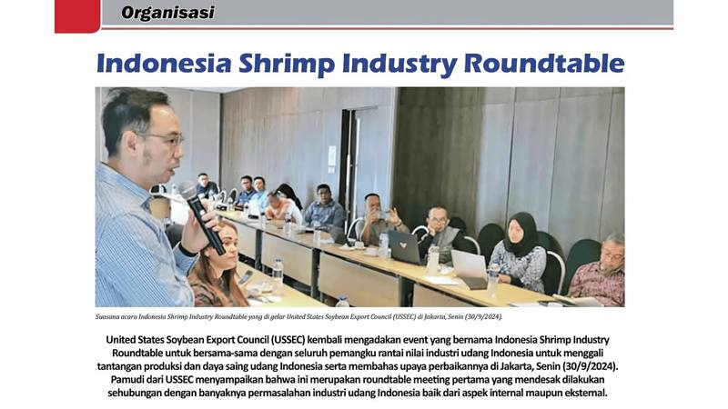

Indonesia Shrimp Industry Roundtable

United States Soybean Export Council (USSEC) kembali mengadakan event yang bernama Indonesia Shrimp Industry Roundtable untuk bersama-sama dengan seluruh pemangku rantai nilai industri udang Indonesia untuk menggali tantangan produksi dan daya saing udang Indonesia serta membahas upaya perbaikannya di Jakarta, Senin (30/9/2024). Pamudi dari USSEC menyampaikan bahwa ini merupakan roundtable meeting pertama yang mendesak dilakukan sehubungan dengan banyaknya permasalahan industri udang Indonesia baik dari aspek internal maupun eksternal.
Hadir dalam event tersebut dua pembicara kunci yaitu Haris Muhtadi dari Shrimp Club Indonesia dan Aris Utama yang merupakan anggota perwakilan dari Global Shrimp Council (GSC). Kedua pembicara menekankan pentingnya narasi untuk menceritakan kisah positif dari udang hasil budidaya. Aris menambahkan, GSC telah meluncurkan program kampanye global yang bernama “happy protein” untuk meningkatkan citra udang sebagai sumber protein yang baik untuk kesehatan fisik dan jiwa/mental. Para pemangku kepentingan yang hadir setuju untuk menciptakan dan menyebarkan narasi positif tentang udang Indonesia baik itu dari aspek gizi/nutrisi, maupun dari aspek sosial dan lingkungan. Menurut Haris, sudah saatnya dilakukan campaign yang massif dalam membangun citra udang Indonesia agar lebih kompetitif di pasar internasional. “Kita harus bisa membangun narasi bahwa udang Indonesia selain kualitasnya bagus, diproduksi dengan memenuhi kaidah budidaya yang baik, berkelanjutan dan memperhatikan kelestarian lingkungan. Semua stakeholder dari hulu sampai hilir harus bekerja sama dengan lebih serius. Karena ini kerja besar dan berjangka panjang,”ujarnya.
Sudari Pawiro, National Chief Technical Advisor (NTCA) – UNIDO Indonesia sebagai salah satu peserta memberikan pandangannya. “Ada dua hal yang saya sampaikan pada meeting USSEC yakni mengenai pengembangan pasar udang dan promosi dan branding udang.” Dengan mengembangkan pasar lokal secara serius, industri udang Indonesia bisa berkembang lebih stabil. Kedua, Terkait promosi dan branding udang memang penting dan kita sudah memilki generic brand yaitu “Indonesian Shrimp” yang dikelola oleh AP5I.
Baca selengkapnya melalui link berikut: